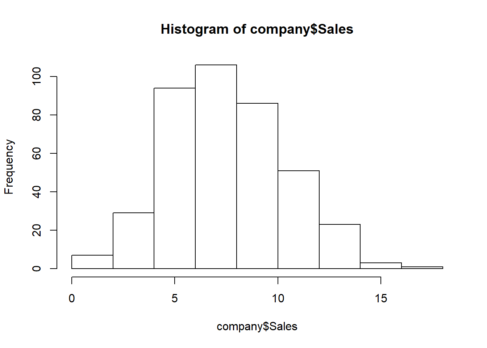
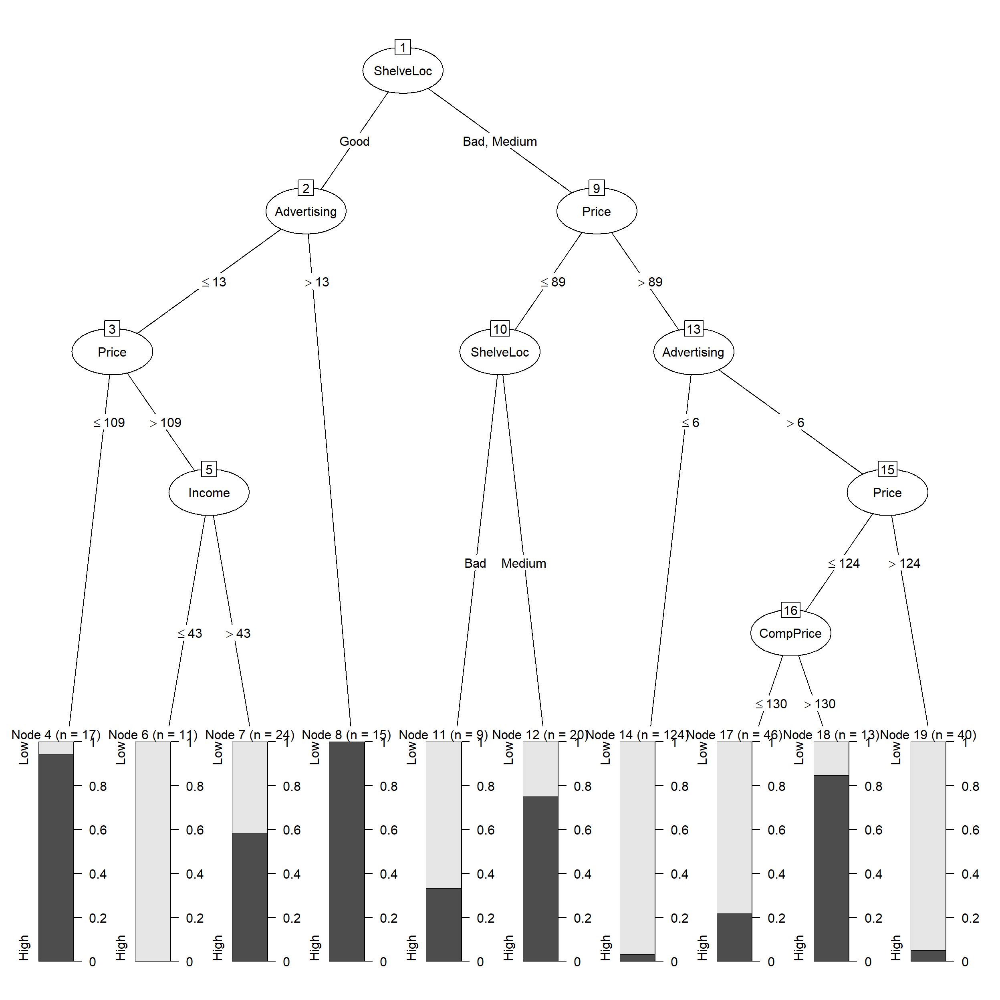
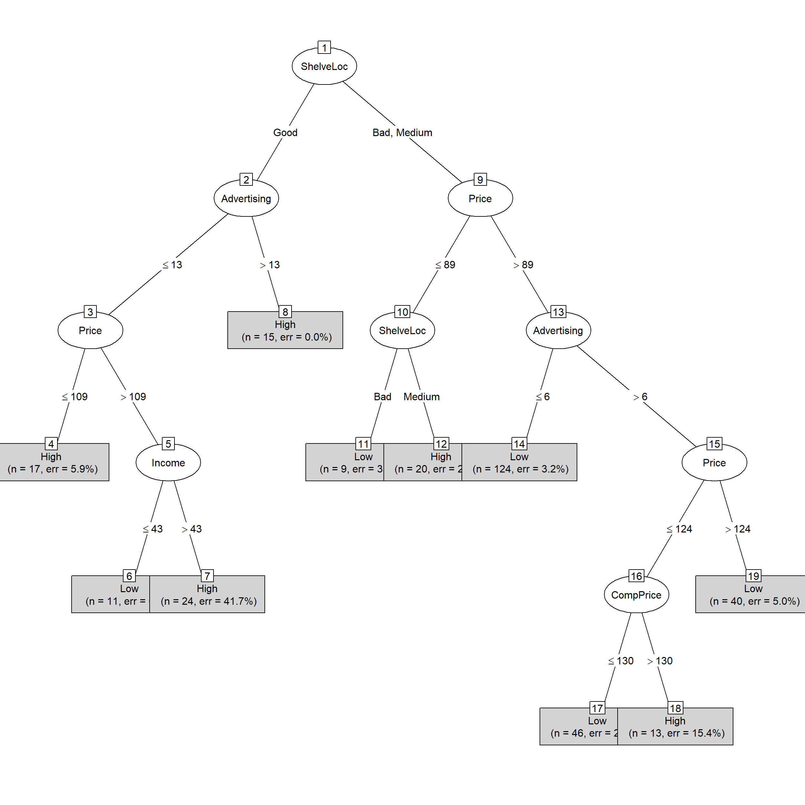

library(caTools)
library(C50)
company <- read.csv("C:/Users/Alex/Downloads/Data/Company_Data.csv")
str(company) # Structure of dataset## 'data.frame': 400 obs. of 11 variables:
## $ Sales : num 9.5 11.22 10.06 7.4 4.15 ...
## $ CompPrice : int 138 111 113 117 141 124 115 136 132 132 ...
## $ Income : int 73 48 35 100 64 113 105 81 110 113 ...
## $ Advertising: int 11 16 10 4 3 13 0 15 0 0 ...
## $ Population : int 276 260 269 466 340 501 45 425 108 131 ...
## $ Price : int 120 83 80 97 128 72 108 120 124 124 ...
## $ ShelveLoc : Factor w/ 3 levels "Bad","Good","Medium": 1 2 3 3 1 1 3 2 3 3 ...
## $ Age : int 42 65 59 55 38 78 71 67 76 76 ...
## $ Education : int 17 10 12 14 13 16 15 10 10 17 ...
## $ Urban : Factor w/ 2 levels "No","Yes": 2 2 2 2 2 1 2 2 1 1 ...
## $ US : Factor w/ 2 levels "No","Yes": 2 2 2 2 1 2 1 2 1 2 ...summary(company) # Summary of variables## Sales CompPrice Income Advertising
## Min. : 0.000 Min. : 77 Min. : 21.00 Min. : 0.000
## 1st Qu.: 5.390 1st Qu.:115 1st Qu.: 42.75 1st Qu.: 0.000
## Median : 7.490 Median :125 Median : 69.00 Median : 5.000
## Mean : 7.496 Mean :125 Mean : 68.66 Mean : 6.635
## 3rd Qu.: 9.320 3rd Qu.:135 3rd Qu.: 91.00 3rd Qu.:12.000
## Max. :16.270 Max. :175 Max. :120.00 Max. :29.000
## Population Price ShelveLoc Age Education
## Min. : 10.0 Min. : 24.0 Bad : 96 Min. :25.00 Min. :10.0
## 1st Qu.:139.0 1st Qu.:100.0 Good : 85 1st Qu.:39.75 1st Qu.:12.0
## Median :272.0 Median :117.0 Medium:219 Median :54.50 Median :14.0
## Mean :264.8 Mean :115.8 Mean :53.32 Mean :13.9
## 3rd Qu.:398.5 3rd Qu.:131.0 3rd Qu.:66.00 3rd Qu.:16.0
## Max. :509.0 Max. :191.0 Max. :80.00 Max. :18.0
## Urban US
## No :118 No :142
## Yes:282 Yes:258
##
##
##
## names(company) # to see the different variable names## [1] "Sales" "CompPrice" "Income" "Advertising" "Population"
## [6] "Price" "ShelveLoc" "Age" "Education" "Urban"
## [11] "US"hist(company$Sales) # histogram of Sales Variable
table(company$Sales>9) # we'll see how many of the observations have sales greater than 9##
## FALSE TRUE
## 287 113There are 113 observations with Sales greater than 9
We’ll convert the Sales variable into categorical variable as High and Low.
Observations with Sales greater than 9 will be considered ‘High’ and those less than 9 will be considered ‘Low’.
We’ll save the new categorical variable as SalesHiLo
company$SalesHiLo <- cut(company$Sales, breaks = c(0,9,Inf), labels = c("Low","High"))
company <- company[c(1,12,2:11)]
head(company)cmpy <- company[c(2:12)]
str(cmpy)## 'data.frame': 400 obs. of 11 variables:
## $ SalesHiLo : Factor w/ 2 levels "Low","High": 2 2 2 1 1 2 1 2 1 1 ...
## $ CompPrice : int 138 111 113 117 141 124 115 136 132 132 ...
## $ Income : int 73 48 35 100 64 113 105 81 110 113 ...
## $ Advertising: int 11 16 10 4 3 13 0 15 0 0 ...
## $ Population : int 276 260 269 466 340 501 45 425 108 131 ...
## $ Price : int 120 83 80 97 128 72 108 120 124 124 ...
## $ ShelveLoc : Factor w/ 3 levels "Bad","Good","Medium": 1 2 3 3 1 1 3 2 3 3 ...
## $ Age : int 42 65 59 55 38 78 71 67 76 76 ...
## $ Education : int 17 10 12 14 13 16 15 10 10 17 ...
## $ Urban : Factor w/ 2 levels "No","Yes": 2 2 2 2 2 1 2 2 1 1 ...
## $ US : Factor w/ 2 levels "No","Yes": 2 2 2 2 1 2 1 2 1 2 ...Splitting data cmpy into train_set and test_set
set.seed(789)
split <- sample.split(cmpy$SalesHiLo, SplitRatio = 0.80)
train_set <- subset(cmpy, split == TRUE)
test_set <- subset(cmpy, split == FALSE)We’ll create a classifier using C5.0 algorithm
classifier <- C5.0(x = train_set[-1] ,
y = train_set$SalesHiLo,
control = C5.0Control(minCases = 10))
classifier##
## Call:
## C5.0.default(x = train_set[-1], y = train_set$SalesHiLo, control
## = C5.0Control(minCases = 10))
##
## Classification Tree
## Number of samples: 319
## Number of predictors: 10
##
## Tree size: 10
##
## Non-standard options: attempt to group attributes, minimum number of cases: 10plot(classifier) # Decision Tree based on classifier
plot(classifier, type="simple") # Simple version of the decision tree
summary(classifier) # we can use summary to get more details on the classifier##
## Call:
## C5.0.default(x = train_set[-1], y = train_set$SalesHiLo, control
## = C5.0Control(minCases = 10))
##
##
## C5.0 [Release 2.07 GPL Edition] Fri Feb 14 10:22:32 2020
## -------------------------------
##
## Class specified by attribute `outcome'
##
## Read 319 cases (11 attributes) from undefined.data
##
## Decision tree:
##
## ShelveLoc = Good:
## :...Advertising > 13: High (15)
## : Advertising <= 13:
## : :...Price <= 109: High (17/1)
## : Price > 109:
## : :...Income <= 43: Low (11)
## : Income > 43: High (24/10)
## ShelveLoc in {Bad,Medium}:
## :...Price <= 89:
## :...ShelveLoc = Bad: Low (9/3)
## : ShelveLoc = Medium: High (20/5)
## Price > 89:
## :...Advertising <= 6: Low (124/4)
## Advertising > 6:
## :...Price > 124: Low (40/2)
## Price <= 124:
## :...CompPrice <= 130: Low (46/10)
## CompPrice > 130: High (13/2)
##
##
## Evaluation on training data (319 cases):
##
## Decision Tree
## ----------------
## Size Errors
##
## 10 37(11.6%) <<
##
##
## (a) (b) <-classified as
## ---- ----
## 211 18 (a): class Low
## 19 71 (b): class High
##
##
## Attribute usage:
##
## 100.00% ShelveLoc
## 95.30% Price
## 90.91% Advertising
## 18.50% CompPrice
## 10.97% Income
##
##
## Time: 0.0 secsTo see which variables are causing high sale, we can check each variable’s usage in the classifier
C5imp(classifier)We can clearly see that the following variables are not at all contributing to decision making of the classifier:
– Population
– Age
– Education
– Urban
– US
y_pred <- predict(classifier, test_set[-1])# Confusion Matrix
cm <- table(test_set[, 1], y_pred, dnn = c("Actual Sales","Predicted Sales"))
cm## Predicted Sales
## Actual Sales Low High
## Low 50 7
## High 8 15# Accuracy
accuracy_Test <- sum(diag(cm)) / sum(cm)
accuracy_Test # 81.25%## [1] 0.8125# Or we can get a more detailed report on the prediction using confusionMatrix function
library(caret)
confusionMatrix(cm)## Confusion Matrix and Statistics
##
## Predicted Sales
## Actual Sales Low High
## Low 50 7
## High 8 15
##
## Accuracy : 0.8125
## 95% CI : (0.7097, 0.8911)
## No Information Rate : 0.725
## P-Value [Acc > NIR] : 0.0479
##
## Kappa : 0.5363
##
## Mcnemar's Test P-Value : 1.0000
##
## Sensitivity : 0.8621
## Specificity : 0.6818
## Pos Pred Value : 0.8772
## Neg Pred Value : 0.6522
## Prevalence : 0.7250
## Detection Rate : 0.6250
## Detection Prevalence : 0.7125
## Balanced Accuracy : 0.7719
##
## 'Positive' Class : Low
## We get an accuracy of 81.25%
We can slighlty improve the classifier using boosting to get an accuracy of 85%
classifier_boosting <- C5.0(x = train_set[-1] ,
y = train_set$SalesHiLo,
control = C5.0Control(minCases = 10),
trials = 20)
y_pred_boost <- predict(classifier_boosting, test_set[-1])
cm2 <- table(test_set[, 1], y_pred_boost, dnn = c("Actual Sales","Predicted Sales"))
cm2## Predicted Sales
## Actual Sales Low High
## Low 56 1
## High 11 12accuracy_Test <- sum(diag(cm2)) / sum(cm2)
accuracy_Test## [1] 0.85